Создание игр в Roblox Studio
Проработка дизайна окружения
Важность проработки дизайна окружения. Путь игрока и точки интереса
Это занятие будет полностью посвящено геймдизайну, а именно - проработке дизайна окружения для того, чтобы незаметно для игрока сделать созданный ландшафт открытого мира интересным и подталкивающим к изучению.
Это достигается при помощи работы с точками интереса.
На этом творческом уроке мы разберем три общие по подходу точки интереса, которые мы можем создать. Применяя полученные принципы, мы сможем сделать свои собственные варианты локаций.
Точка интереса - это ключевая локация на карте, привлекающая внимание игрока и пробуждающая в нем желание дойти до нее и исследовать. В таких локациях обычно размещают основные или побочные квесты, дополнительные активности (лагеря бандитов, поиск сокровища, скрытые элементы сюжета и тд.).
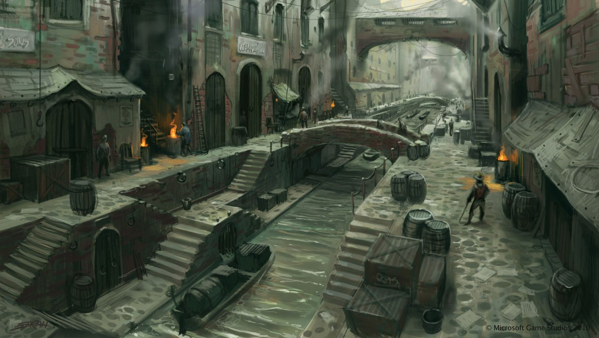Хороший геймплей строится на сочетании точек интереса и сюжетных арок. В этом занятии мы не будем работать с сюжетом, но научимся прорабатывать места, в которые нам нужно направить игрока незаметно для него.
Одна из ключевых обязанностей художника по окружению - это создание такого ландшафта, по которому игрок будет подсознательно идти в заданном направлении, перемещаясь от одной точки к другой в соответствии с сюжетом.
Правильная точка интереса имеет точку входа, которая намекает на то, что внутри есть что-то интересное (тропа, пещера, мост и тп.), выделяется на фоне окружения, видна издалека и находится недалеко от главного пути игрока.
Точка начала игры
Первое, что нам нужно сделать - найти три ключевые точки интереса, с которыми мы будем работать на этом занятии, и определиться с точкой, в которой мы начнем игру. В этой точке разместим SpawnPoint, для этого перейдем во вкладку Model и создадим соответствующий объект нажатием на одноименную кнопку.
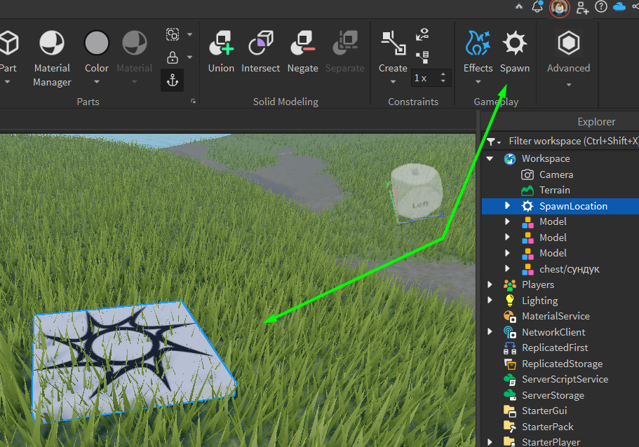Определяем финальную точку и основную тропу
Определим главную точку, в которую мы будем вести игрока: она должна быть в дальнем конце карты и хорошо видна из точки начала игры.
После определения главной точки интереса посмотрим на карту с высоты и при помощи инструмента Paint нарисуем тропу от стартовой точки к финальной. Эта тропа должна проходить через две остальные точки интереса, которые будут проработаны как дополнительные локации для исследования.
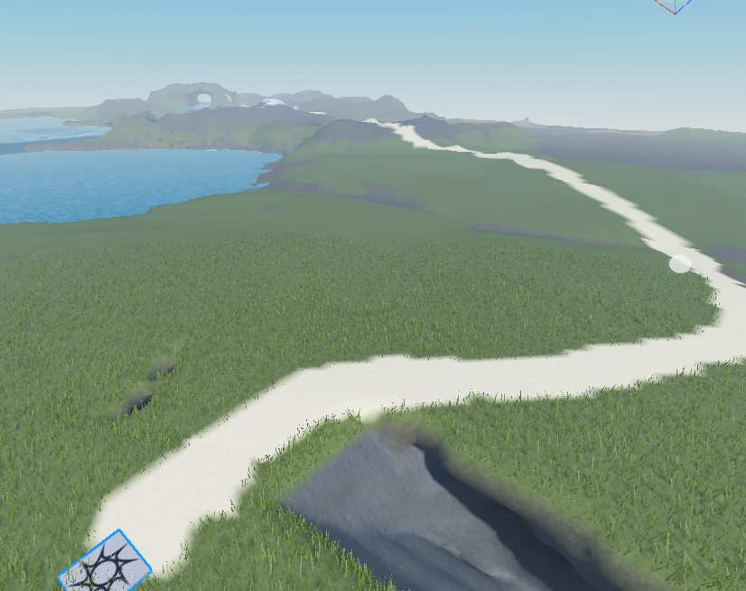В первую очередь необходимо сделать природные границы в виде гор, ущелий, обрывов и других непроходимых участков ландшафта: таким образом мы укажем игроку, куда ему нужно идти.
Используя инструменты манипуляции ландшафтом, проработаем основную тропу таким образом, чтобы ограничить игрока в передвижении в неправильных направлениях.
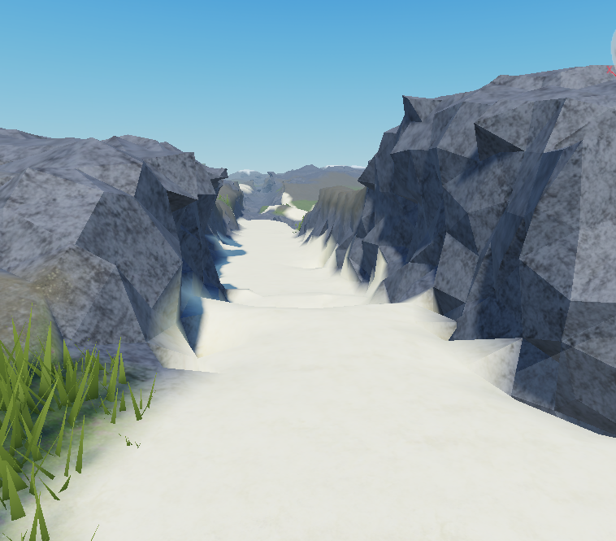Настраиваем путь игрока
Гора - первая точка интереса
Перейдем к первой точке интереса. В качестве примера будет приведена гора. Определим главный маршрут прохода к этой локации - для горы максимально логичным будет путь на вершину через узкие проходы и обрывы.
Доработаем общий объем горы: необходимо сделать так, чтобы препятствие было визуально привлекательным. Для этого при помощи элеменов изменения ландшафта добавим тропу и визуальные признаки прохода к вершине - природные арки, пещеры и т.д.
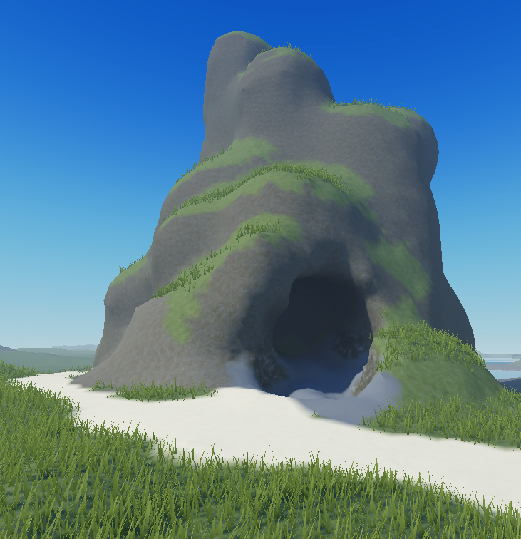Оформим вход в локацию - он должен прилегать к основной тропе и визуально выделяться. Используем инструмент Paint для добавления новых материалов в качестве визуальных акцентов, например, можно использовать песок, камень, снег, лаву и т.п.
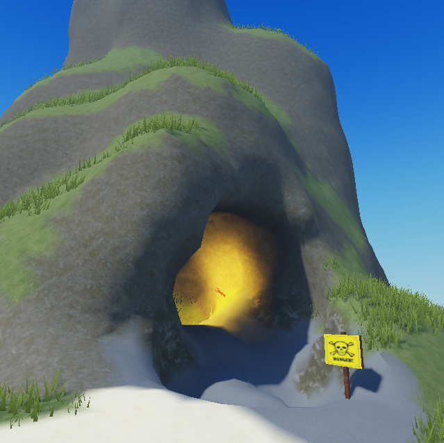Ландшафт на пути игрока
Проработаем путь игрока при помощи изменения формы и материала ландшафта. Постараемся сохранять естественность локации, чтобы полученный путь выглядел достаточно органично и не выбивался из общей картины.
Водные преграды
Если местность позволяет, мы можем добавить дополнительную природную направляющую - реку или ручей, идущий вдоль главного пути - это подсознательно будет подталкивать игрока не пересекать границу и идти в направлении течения воды.
С помощью воды доведем игрока до следующей локации. В качестве примера здесь можно использовать озеро с горными массивами на другой стороне. При необходимости, можно добавить дополнительный ландшафт, чтобы визуально выделить точку интереса.
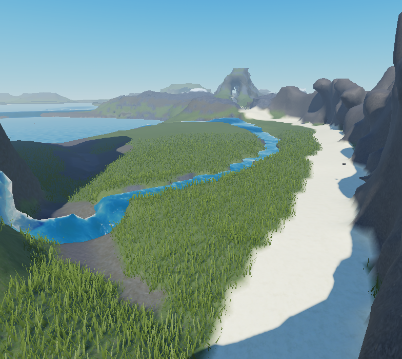Добавим скрытую заводь, которую будет частично видно со входа в локацию. Это место должно намекать на то, что в нем есть что-то интересное, однако, чтобы узнать, что именно, необходимо будет проплыть через озеро.
Для того, чтобы органично оформить вход на локацию такого вида, проработаем спуск к воде: с помощью инструмента Paint создадим песчаный пляж и замаскируем добавленные вами материалы при помощи смешения их с другими материалами, использующимися в окружении.
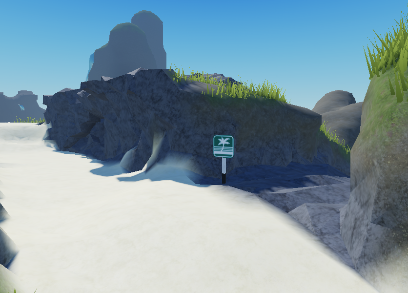Ключ к созданию реалистичного пляжа - неровные края и неравномерное распределение песка по поверхности, также песок нужно сочетать с камнями, травой, землей, листьями и т.д.
Путь игрока - новые материалы и траектории
Продолжим оформлять путь к финальной точке. Чтобы создать ошущение приближения к финальной точке можно добавить более экзотических материалов, например, лаву и базальт.
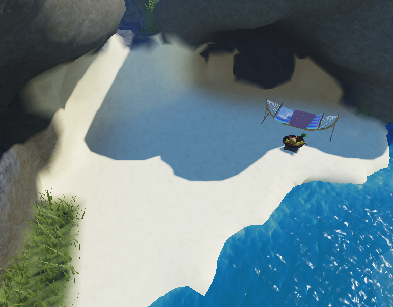Не забываем следить за тем, чтобы игрок органично передвигался по тропе, не сбиваясь с курса: для этого слегка ограничиваем его передвижение при помощи обрывов и выступов.
В финальной локации нужно забраться на вершину плато из песчаника, при этом не создаем ярко выраженную тропу - её необходимо задать при помощи ландшафта. Используем природные переходы между поверхностями, добавим сложности прохождения, проводя игрока около уступов и обрывов, добавим интересные элементы ландшафта, такие как природные арки, предоставляющие путь над пропастью, добавим каскад из небольших плато, по которым нужно будет запрыгнуть на самый верх.
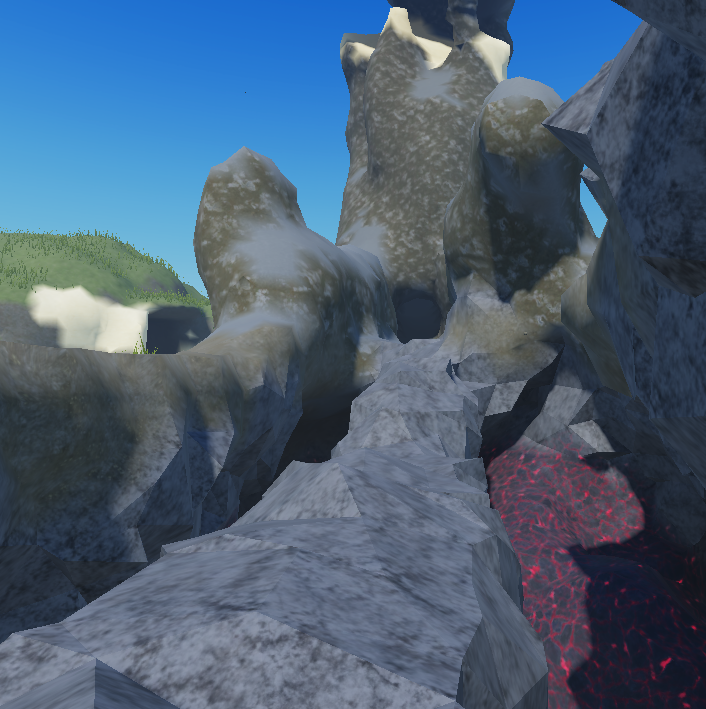Финальная локация
Теперь оформим финальную локацию с помощью Toolbox'a: можно поставить сундук, пиратский флаг и для драматичности добавить скелет неудавшегося искателя приключений :)
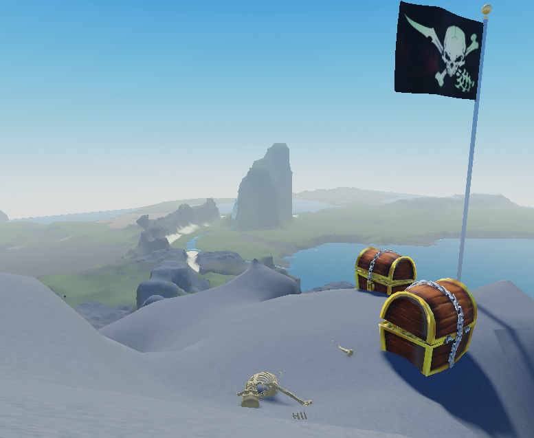Домашкаа 😁
Необходимо самостоятельно придумать и оформить в домашнем проекте с ландшафтом несколько точек интереса. Это может быть что угодно, главное - применить полученные навыки для того, чтобы пробудить интерес к исследованию.
Точки интереса должны содержать:
- Вход в локацию
- Финальную локацию
- Путь от начала к концу
- Природные ограничения передвижения игрока
- Различные материалы ландшафта
Для оформления точек можно использовать детали из Toolbox.